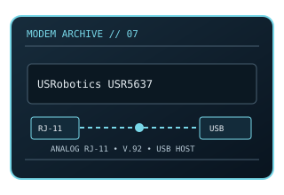

[ MODEL-SPECIFIC NETWORK HARDWARE ]
USRobotics USR5637 56K V.92 USB Modem
External USB dial-up modem for an analog telephone line, with V.92 and V.90 fallback modes. This static record documents the modem-side line technology separately from its host interface and provider-dependent service rate.

MODEL IDENTIFICATION: Match the exact model number and hardware revision on the device label. Similar names, regional SKUs and provider-branded variants may have different ports, firmware, modulation or driver support.
Exact specifications and compatibility
| Cataloged model | USRobotics USR5637 56K V.92 USB Modem |
|---|---|
| Dedicated subcategory | Modems and line-termination devices |
| Modulation / line protocol | ITU-T V.92/V.90 modem signaling; V.34 fallback; RJ-11 analog telephone-line interface; V.92/V.90 PCM downstream and V.34-family upstream modulation with automatic fallback to lower rates. |
| Line / physical interfaces | RJ-11 analog telephone-line interface; V.92/V.90 PCM downstream and V.34-family upstream modulation with automatic fallback to lower rates. |
| Nominal data rate | Up to 56 kb/s receive under V.92/V.90 line conditions; V.92 upstream can reach 48 kb/s, while V.90 upstream is generally limited to 33.6 kb/s. Actual connection rates vary. |
| Bus / host interface | USB 2.0 host bus to the computer; RJ-11 telephone line. USB supplies host data/control, not an Ethernet network interface. |
| Operating-system compatibility | Requires the correct model/revision driver and an OS dial-up networking stack. Original vendor support focused on legacy Windows and older macOS versions; current OS driver availability is not guaranteed. A real analog telephone line is required. |
| Driver / firmware notes | 56K is a downstream signaling maximum under restrictive PSTN conditions; VoIP/ATA paths, call-waiting, line noise, digital PBX extensions and regional regulations can reduce speed or prevent connection. |
| Wi-Fi / switching | No Wi-Fi access point or Ethernet switching function is cataloged for this modem. |
Model-specific notes
56K is a downstream signaling maximum under restrictive PSTN conditions; VoIP/ATA paths, call-waiting, line noise, digital PBX extensions and regional regulations can reduce speed or prevent connection. Nominal signaling rates are standards/model ceilings rather than specimen test results or a promise of ISP throughput.
Manufacturer, archive and standards references
- Internet Archive catalog copy of USRobotics 56K USB modem documentationArchived model-specific guide or software documentation for identification and legacy host details.
- USRobotics manufacturer supportManufacturer source; confirm regional SKU, revision and present support status.
- ITU-T Recommendation V.92 — modem-on-hold and PCM upstream enhancementsStandards reference for the relevant line/modem signaling family; implementation and ISP profile remain model-specific.
Check manufacturer and provider support for the exact region, revision, line profile, firmware and host OS before deployment.